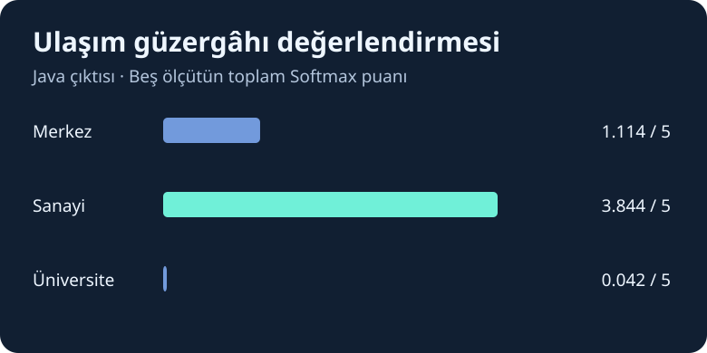

Transport Route Planner
Salt okunur demo. Üç sentetik senaryo özgün Java uygulamasıyla önceden hesaplandı. Gerçek güzergâh veya belediye verisi kullanılmadı.

Java program çıktısı
Mahalle Kriterleri ve Ağırlıkları:
-----------------------------------------------------------
Mahalle Nüfus Ulaşım Maliyet Çevresel Sosyal
Merkez 630.00 4.00 348.00 94.00 25.00
Sanayi 1025.00 6.00 518.00 29.00 48.00
Üniversite 682.00 3.00 376.00 102.00 31.00
Softmax Ağırlıkları:
Merkez 0.0000 0.1142 1.0000 0.0000 0.0000
Sanayi 1.0000 0.8438 0.0000 1.0000 1.0000
Üniversite 0.0000 0.0420 0.0000 0.0000 0.0000
En uygun mahalle: Sanayi
Kaynak kodunu ve çalıştırma adımlarını aç ↗